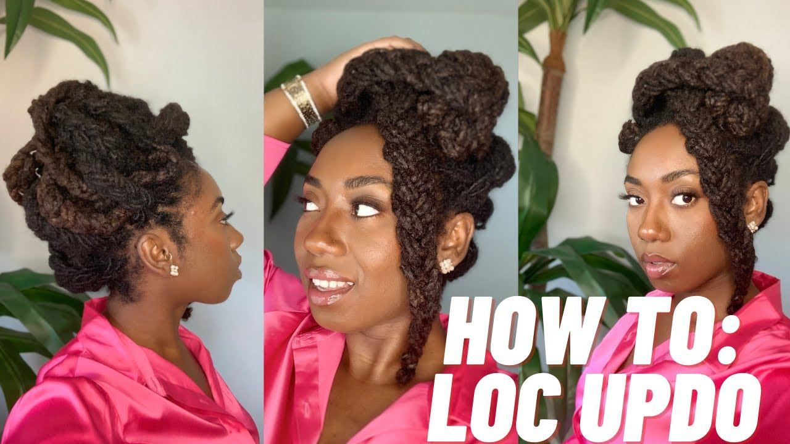

Loc Updos and Caps: Styling Up Without Crushing the Style
The updo is where locs show their range — buns, crowns, twists and pinned sculptures that carry locs into weddings, work and every formal room. NattyAnn (@nattyann) builds a full updo in the video below. But an updo creates a problem loose locs never face: how do you protect a three-dimensional style overnight without crushing it back to flat? This guide covers both halves — building updos that hold, and the cap strategy that keeps them alive for days.
Building an updo that holds
Start with the base: gather the locs smoothly in the direction the style will sit, and anchor with the locs themselves wherever possible — wrapping a few locs around the base of a bun beats a pocketful of pins, holds more comfortably, and looks cleaner. Pins and bands are finishing tools, not the structure. A style built on its own architecture survives the day; a style built on hardware fights you by noon.
Tension discipline matters as much as in a retwist. Edges and temple locs should be guided into the style, never dragged. If the updo pulls when you raise your eyebrows, it is too tight — rebuild it looser now, because an updo worn all day at that tension is a headache with a hairstyle attached, and repeated wear is a thinning risk at the hairline.
Choosing the style for the hair you have
Length and thickness write the menu. Medium locs shine in buns, rolls and twisted crowns; long locs add braided bases, woven updos and full sculpted styles. Fine or thinning areas should be styled around, never used as anchors — distribute the style's weight across your strongest sections.
Match the style's lifespan to your calendar honestly. A same-day event style can be elaborate and delicate. A style you need for a working week should be simpler, lower, and built to survive caps, sleep and weather. Styling for the life the style will actually live is the difference between a look and a routine.
The overnight cap strategy
An updo needs volume from its protection — the opposite of wave compression. Use an oversized satin bonnet or a jumbo dreadlock cap with room for the style to sit inside untouched, gathered over the top rather than pressed down. Standard durags and snug caps are for loose locs and waves; pulled over an updo, they iron it flat by morning.
Position the cap's band below or above the style's anchor points, never across them, and in the morning, refresh rather than rebuild: smooth the edges, re-pin only what moved, and mist lightly if the style has dried out. A well-built updo under the right cap gives you three to five days of style from one session — that is the whole economy of the thing.
Watch: NattyAnn builds a loc updo for medium and long locs — the base styling this guide works from
Video: “HOW TO: LOC UPDO FOR MEDIUM/LONG LOCS” by NattyAnn (@nattyann) · Watch on YouTube
Shop the gear
Everything in this guide runs on the right gear: a durag that holds compression without slipping, a cap that stays put, and fabric that treats your hair right. The durag.store launch lineup is built to that standard — dual-layer construction, long tails, and stitching made to survive the routine. Join the launch list and use code GOLDSTANDARD for 15% off your first order.
Keep learning
- Double Durags for Long Locs: Containing Length Without Crushing It — Intermediate · Locs & Dreadlock Care
- Dreadlock Caps: The Complete Guide to Sleeping and Living in Locs — Intermediate · Locs & Dreadlock Care
- Sleeping With Starter Locs: Protecting Baby Locs Through the Fragile Months — Basic · Locs & Dreadlock Care
Sources: Video — “HOW TO: LOC UPDO FOR MEDIUM/LONG LOCS” by NattyAnn (@nattyann), youtube.com. Guide written by the durag.store Wave Lab.